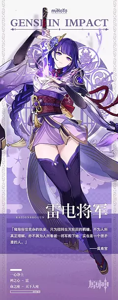
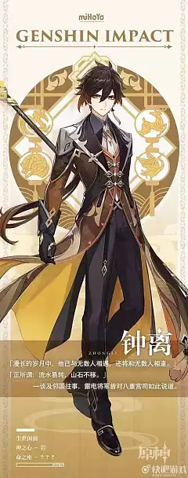
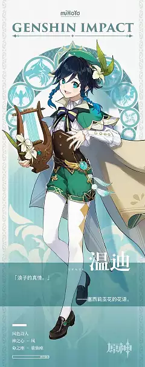
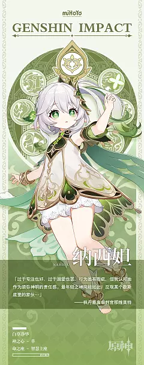

|
|||||||
| 首页 | 登录 | 世界 | 角色 | 壁纸 | |||
 |
芙宁娜 神之眼：水 命之座：司颂座 永世领唱，无尽圆舞 一个谎言诞生是为了圆另一个谎，在展开无数谎言 的尽头，人们见到了「正义」。无知之人在讥笑，这从来都是一场闹剧。直到他溯源而上，发觉是他先欺骗了自己。相信从芙宁娜上任水神的第一刻起，枫丹的民众们就是喜欢她的。 她那极具号召力的言辞，风趣而不失优雅的举止，都在彰显着作为一位神明的魅力。 而或许最令芙宁娜享有赞誉的，是她那独一无二的「戏剧感」。 正如欧庇克莱歌剧院上演的名剧中的台词， 「生命如同戏剧，你永远预料不到转折出现在哪一篇章」。 芙宁娜也是如此这般令人难以捉摸，总是猜不透她接下来准备如何行事。 但也正因如此，这位高居神座的正义与审判之神，才那样令人着迷。然而，就像欢愉落幕以后，人们会感到空虚一样， 芙宁娜这样的神，是否也曾有过在夜半时分独自落寞的时光？ 民众恐怕无法想象，并且坚定地认为那种场面并不会上演吧。 是的，本该如此相信的。 若非露景泉的泉水... 默默收容了芙宁娜的泪水的话。 |
||||||
|  | 雷电将军 神之眼：雷 命之座：天下人座 千手百眼，天下人间 自降生之刻起，人类便会对世界抱有强烈的憧憬与好奇。此乃认知世界的锚点，构筑理智的根基。稻妻人民的世界亦是如此。那里很早就有了风雨和雷电，有了天光与大海……有了“雷电将军”。 幼子睡前聆听故事，母亲为其讲述的是将军斩魔神降异族的传说。少年少女踏遍群岛，眼中所见是雷霆一刀劈斩而成的峡谷，与森然矗立的苍白蛇骨。 士兵奔赴战线，口中高喊的是“常道恢弘，鸣神永恒”。百姓安居乐业，心中感怀的是将军及其麾下尽忠职守的三奉行。 “雷电将军”的威名，早已超脱生命桎梏，化作了稻妻永世传承的信仰。在这份威名与力量下，人们有理由相信，他们的后代也会目睹相同的风景，以相同的信仰构建心中世界，并将这份传承延续下去。 此即为——将军大人许诺人民的恒常乐土。 |
||||||
|  | 摩拉克斯 神之眼：岩 别名：钟离 尘世闲游 在璃月的传统中，“请仙”与“送仙”是同样重要的事。最擅长“送别”一道的，莫过于胡家传承七十七代的“往生堂”。但“往生堂”的堂主胡桃本人，主要还是专注于送别凡人的技艺。 送别仙人的诸般仪式，则交由一位“道上的朋友”—钟离打理。仙人与璃月一同度过漫长岁月，三千多年来升天者寥寥无几，这就意味着一切相关传统都只能以纸面形式存在，时间跨度实在太长了，这可不是那种你小时候咬着糖葫芦参加过一回，老了还能躺在竹椅上再次亲眼目睹的事件。 但即便是眼光最为挑剔、沉迷旧纸堆的老学究，也无法对“往生堂”操办的送仙典仪挑出任何毛病。不仅仪式中人的服饰合规，仪式举行的吉时、地点、用具，乃至当天天气、仪式时长、允许观礼人数、观礼者身份职业年龄，哪怕将以上所有全都纳入计量范畴，也无一不合礼节。 若人们以“通古晓今”来形容钟离，他只会无奈地一笑，叹道: “我只是……记性很好。” |
||||||
|  | 巴巴托斯 神之眼：风 别名：温迪 听凭风引 且听风吟 为了生在城中，未曾目睹飞鸟的少年，元素精灵温迪搜集来鹰隼的翎羽。 此后，蒙德爆发了追求「自由」的战争。 羽毛藏在温迪怀中，随他一同在反抗的硝烟里见识了乖僻的君王之殁。 君王曾为臣子们提供没有苦寒的城市。 直到最后，他都以为众臣爱他，一如他爱他们。 即便得到胜利，温迪也未能将这片羽毛交给少年。因为少年在抗争中为了诗歌、蓝天、飞鸟，以及与他一样生在风墙内的人们而死。 旧的神座崩毁，新神诞生。风神巴巴托斯体会到了指尖流淌的力量。 他用这力量所做的第一件事，便是以少年的模样重塑自身形体。 －因为只有用人类的形体，才能弹好少年钟爱的 竖琴。 他拂动琴弦，用神风吹散冰雪，劈开山峦。 让新的蒙德成为自由之地吧，成为无人称王的国度。 假以时日，应该会是很好、很浪漫的城邦··· 「他也会希望生活在这样的地方吧。」 如是，「新蒙德」之肇始。 |
||||||
|  | 纳西妲 神之眼：草 命之座：智慧王座 白草净华 许久之前，草神创造了须弥雨林，又通过教令院将智慧赐予国民。她的美名无处不在，千万个故事，只为传唱她的事迹与美德而问世。在人民眼中，草神的存在更像是一种符号化的象征——因此，他们才能确信神明的庇护自古就存在于这片土地之上。城中至贤对草神崇拜备至，民众也坚定不移地追随其后。而影响诸多的“虚空”系统，则是”小吉祥草王”的耳与目。 它给予她遍历人们喜怒哀乐的能力，令她听见看见一切，让她理解了赞美之外的声音。见闻越是拓展，她越明白自己必须不断学习。她唯有尽快成长，才能面对来自世界最深处的威胁。无法逃离，那是她无法回避的使命。即便没多少人对现状不满，纳西妲依旧坚定不移。她的顽强来源于信念，她比任何人都明白——在这里，她将是所有人的寄托与依靠 |
||||||
| 用户协议 | 隐私政策 | 儿童隐私政策 | 自律公约 | 家长监护工程 | 关于我们 | 联系我们 | 加入我们 健康游戏忠告：抵制不良游戏，拒绝盗版游戏。注意自我保护，谨防受骗上当。适度游戏益脑，沉迷游戏伤身。合理安排时间，享受健康生活。 | |||||||